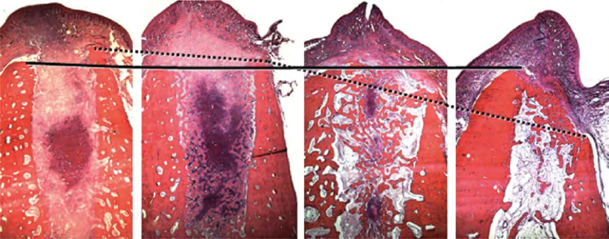

نسخه استخراجشده؛ ترجمه یا تأیید علمی انجام نشده است. وضعیت: captured
دیوارهی داخلی ساکت — آلوئولار بون پروپر یا باندل بون — استخوانی است که الیاف شارپی پریودنشیوم در آن لنگر میاندازند. پهنایش تنها ۲۵۰ تا ۵۰۰ میکرون است و مهمتر از همه: وابسته به دندان است.
وقتی دندان کشیده میشود، دلیل وجودی باندل بون هم میرود. استئوکلاستها روی سطح داخلی دیوارهها مینشینند و در همان هفتههای اول ترمیم، بیشترِ باندل بون برداشته میشود — در حالی که ساکت همزمان از استخوان بافهای پر میشود.
حالا نکتهی سرنوشتساز: در ناحیهی قدامی، بیش از ۸۰ درصد دیوارهی باکال کمتر از ۱ میلیمتر ضخامت دارد. چنین دیوارهای عملاً تمامش باندل بون است؛ با رفتن دندان، تقریباً هیچ چیزی برای ماندن ندارد.

تحلیل نه یکنواخت است و نه متقارن. دیوارهی باکال همیشه بیش از لینگوال/پالاتال تحلیل میرود، پس مرکز ریج به سمت لینگوال یا پالاتال جابهجا میشود — و ایمپلنتی که کورکورانه در «وسط ریج امروز» گذاشته شود، ممکن است پالاتالتر از موقعیت پروتزی درست بنشیند.
و تقویم: عرض باکولینگوال در ۳ ماه اول حدود ۳۰ درصد کم میشود و پس از ۱۲ ماه، دستکم ۵۰ درصد عرض اولیه از دست رفته است. یعنی نیمی از پهنای ریج، در همان سال اول.
پیامد بالینی روشن است: تصمیم دربارهی حفظ ساکت و زمانبندی کاشت را نمیتوان به تعویق انداخت — بیشترین ضرر دقیقاً در ماههایی رخ میدهد که معمولاً منتظر میمانیم.
بایوتایپ هم رفتار بافت را پیشبینی میکند. در بایوتایپ نازک، لثه ظریف، پاپیها بلند و باریک و دیوارهی باکال نازک است و فاصلهی عمودی کرست استخوان بیندندانی تا لبهی استخوان باکال از ۴ میلیمتر بیشتر است؛ در بایوتایپ ضخیم این فاصله حدود ۲ میلیمتر است و بافتها ضخیمتر و مقاومترند.